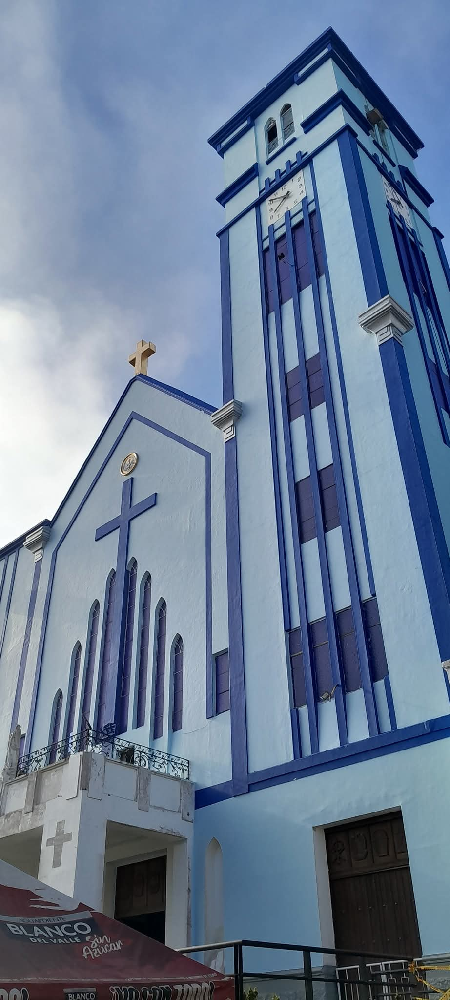
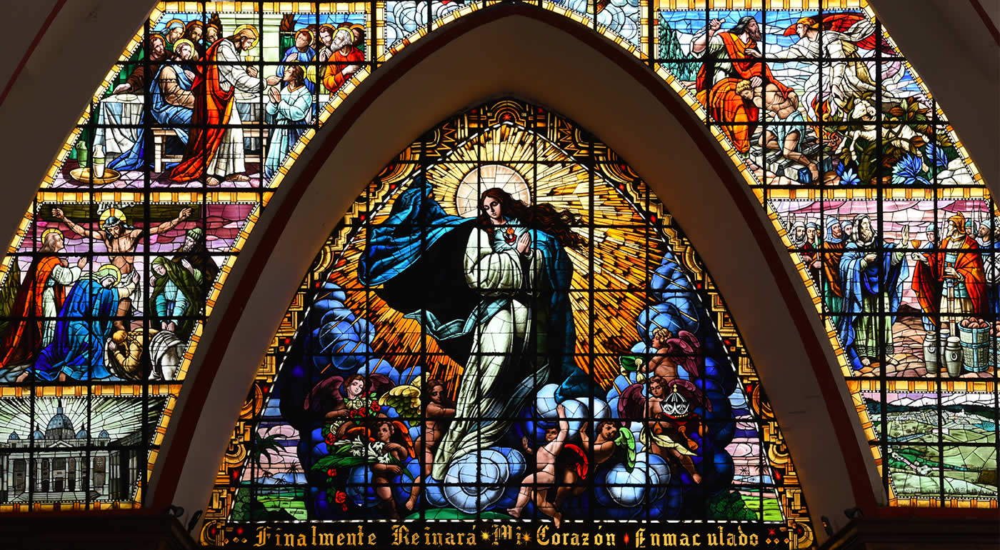

Parroquia La Inmaculada Concepción
Parroquia La Inmaculada Concepción
Parroquia La Inmaculada Concepción
Parroquia La Inmaculada Concepción
Versalles, Valle del Cauca

La Inmaculada Concepción
Cartago, Valle del Cauca
Carrera 8 # 6-53 Versalles
Pbro. Orlando de Jesus Toro V
315 352 9123

La Fachada: El Rostro del Templo La fachada destaca por su verticalidad y limpieza formal, sirviendo como el faro visual que corona el parque principal del municipio.
Estilo y Color: Domina un imponente color blanco que contrasta de manera limpia con las molduras oscuras o grises que delinean sus formas geométricas. Su estética mezcla la sobriedad republicana con la tipología de los templos de la colonización antioqueña.
La Torre Campanario Central: Es el elemento más representativo del exterior. Se eleva de forma esbelta directamente sobre el eje de la entrada principal, culminando en un capitel puntiagudo que a menudo se pierde entre la neblina característica del pueblo. Aloja el gran reloj público y las campanas tradicionales del municipio.
El Atrio de Entrada: Al estar asentado en la parte alta de la ladera, el acceso al templo cuenta con escalinatas y un atrio espacioso que funciona como plataforma de observación hacia la plaza y como punto de encuentro para la comunidad antes de cruzar los grandes portones de madera.
El Interior: Amplitud, Madera y Luz Una vez se cruza el umbral de la entrada, el interior rompe con la sencillez del exterior, revelando una estructura de gran altura pensada para evocar solemnidad.
Distribución y Arcos: El espacio interior se organiza en naves amplias separadas por columnas robustas. Estas columnas se unen en la parte superior mediante una hermosa sucesión de arcos de medio punto, los cuales guían la mirada de los feligreses directamente hacia el altar.
El Techo y la Madera: Fiel a las tradiciones constructivas de la cordillera, el templo cuenta con un notable trabajo de ebanistería y carpintería. Los cielorrasos y las estructuras de soporte de madera aportan calidez al ambiente, balanceando el clima fresco de la zona.
El Viacrucis Tallado: Distribuidas a lo largo de los muros de las naves laterales, se encuentran las estaciones del Viacrucis, las cuales son obras talladas artísticamente en madera, muy valoradas por su nivel de detalle y manufactura.
Atmósfera Lumínica Envolvente: La magia del interior ocurre gracias a la interacción con el sol. El diseño arquitectónico permite que la luz exterior se filtre a través del monumental vitral del presbiterio y de los ventanales laterales. A ciertas horas del día, el interior de la iglesia se inunda por completo de destellos azules, rojos y dorados, proyectando un mosaico místico sobre el suelo de la nave central y los bancos.
Dato curioso: La imagen de la Virgen que preside el templo pertenece a la célebre escuela de arte quiteño, reconocida históricamente en toda la región andina por la delicadeza en las facciones y el realismo de sus esculturas religiosas.

Uno de los detalles más destacados e impresionantes de la parroquia es que alberga el vitral más grande de Latinoamérica. Algunos de sus datos mas relevantes son:
La figura central: Domina una representación imponente de la Virgen de la Inmaculada Concepción, suspendida sobre nubes con querubines y envuelta en un resplandor de luz amarilla que simula destellos celestiales.
La inscripción inferior: Justo en la base que sostiene el arco del diseño, se lee claramente la promesa mariana: “..Finalmente Reinará Mi Corazón Inmaculado..”.
Paneles narrativos periféricos: A los costados se distribuyen recuadros más pequeños con un colorido muy vivo (donde destacan azules y rojos intensos). Estos mosaicos de vidrio ilustran pasajes clave del Vía Crucis y la vida de Jesús (como la Última Cena en la parte superior izquierda o la crucifixión), junto con sutiles alusiones a la historia y la geografía de la región.